Untitled
Work spanning 2019 to present. Currently, untitled and in progress. Subject to change and under construction. Working concept (as of 02.01.24) - imprecise landscapes that expose a disjointed shared history, examining the fallible nature of memory that is constantly reshaping the past. The project is presently in hiatus. However, I exhibited a 150 x 100cm C-type print from this work at 'Landscape- Perspectives on Memory'. Trace Gallery, Nottingham, 3rd - 11th April 2024.
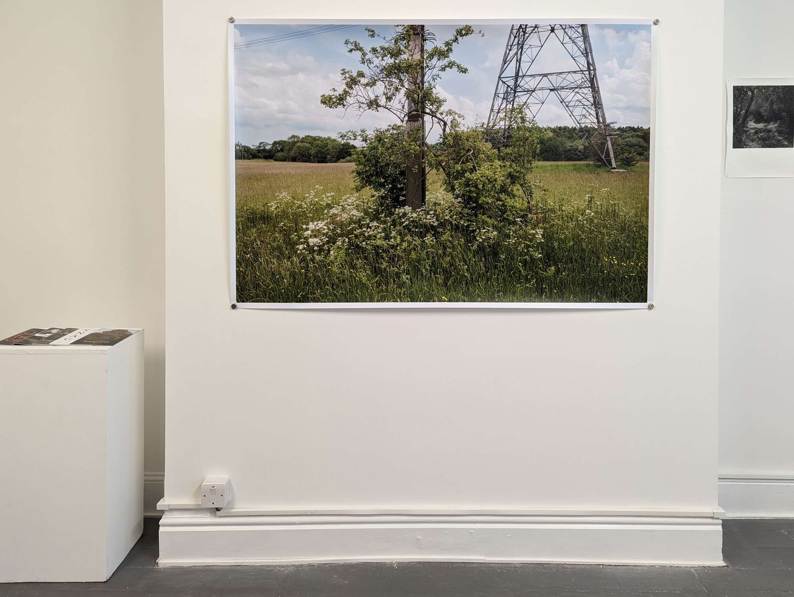
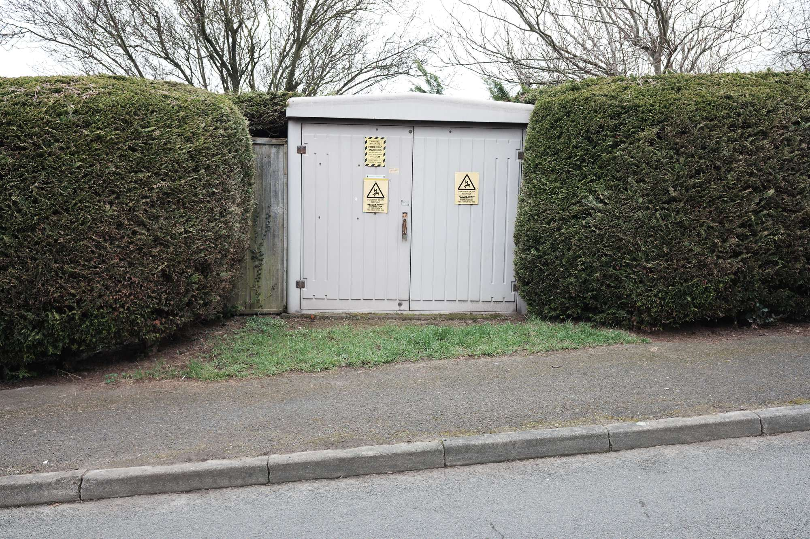
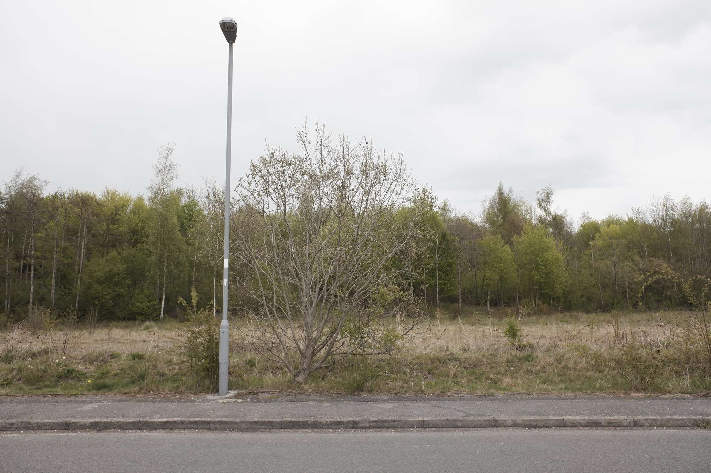
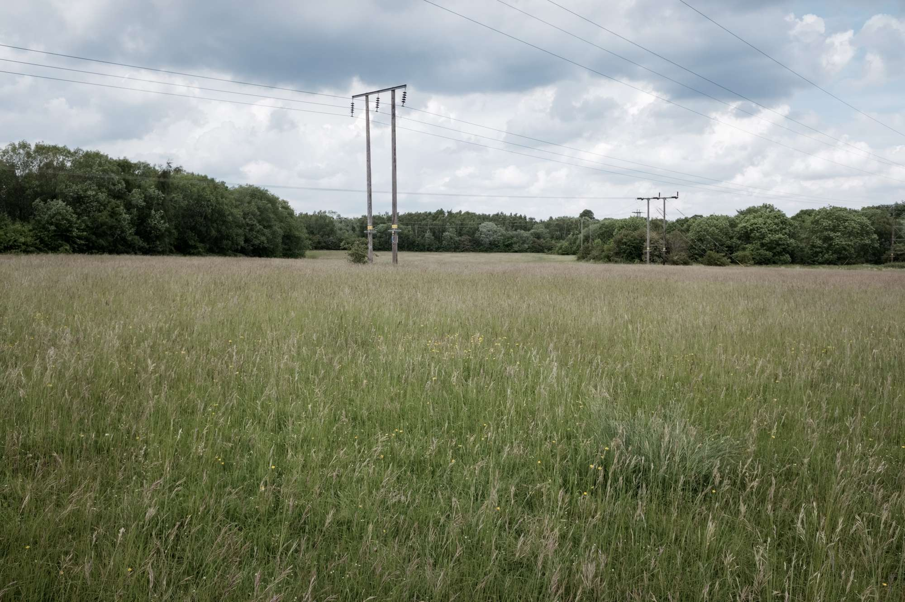
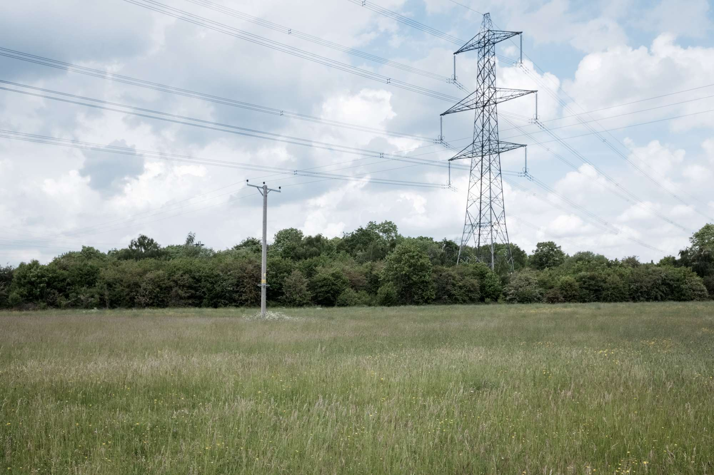
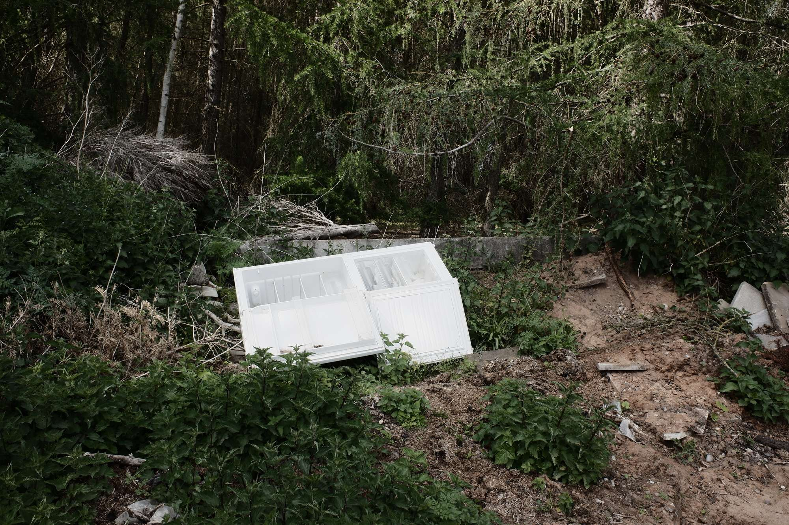
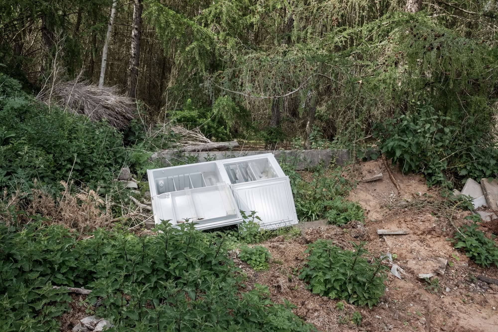
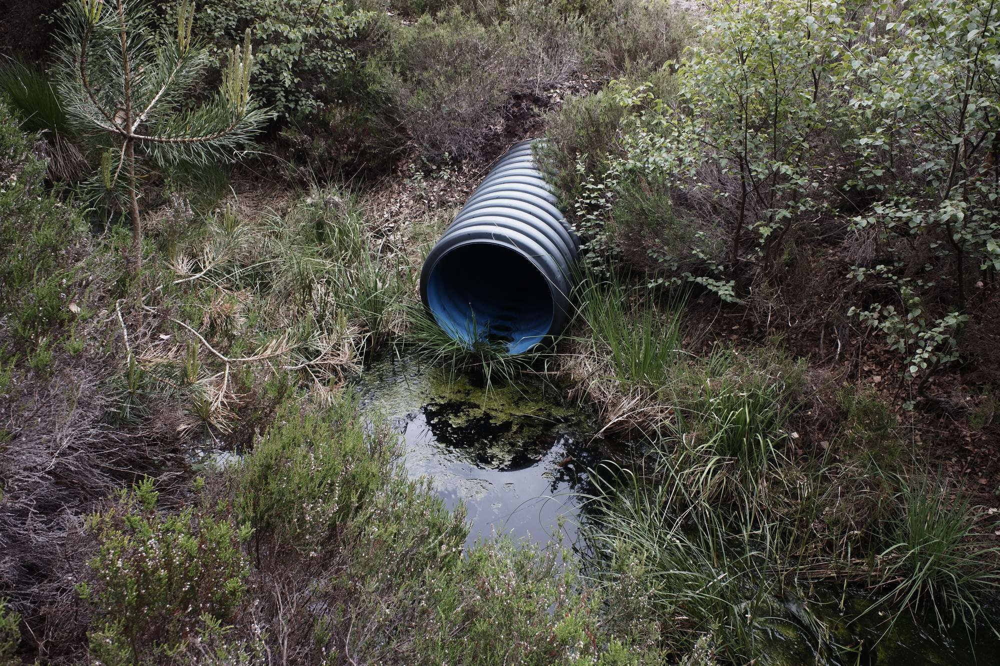
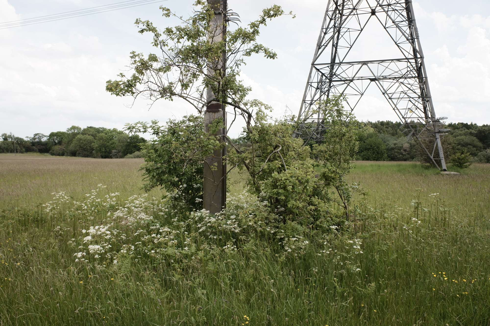
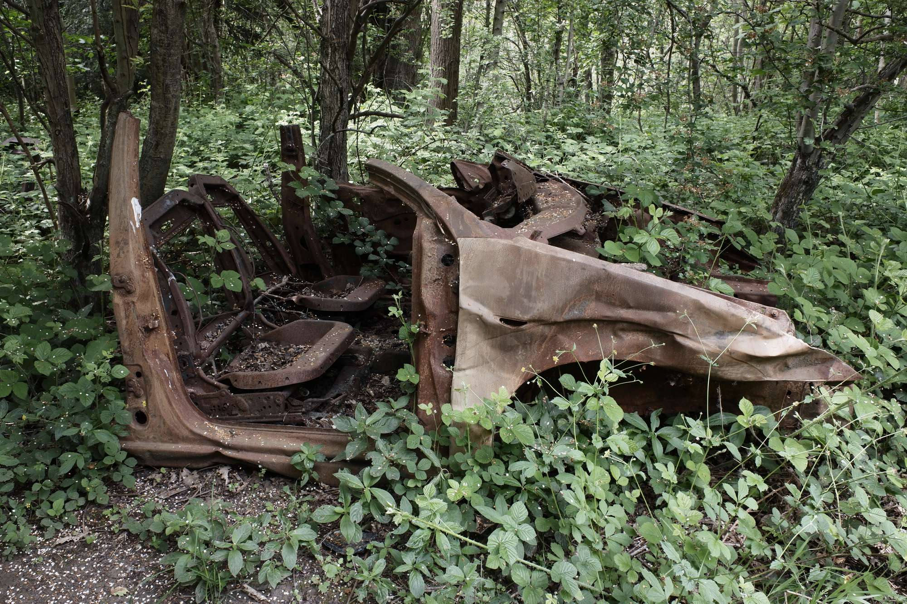
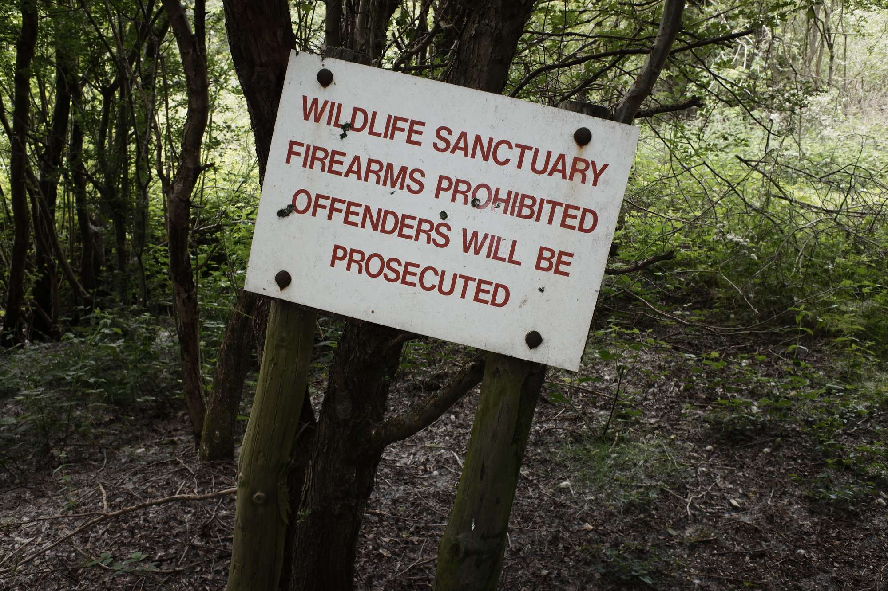